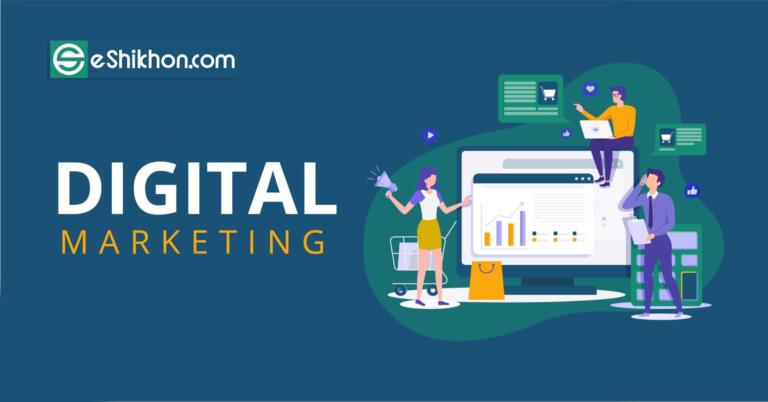

লিফলেট, ব্যানার, ফেস্টুন এর যুগ শেষে এখন হল ডিজিটাল মার্কেটিং কিংবা অনলাইন মার্কেটিং এর যুগ। অনলাইন মার্কেটিং এর মাধ্যমে এনালগ মার্কেটিং এর চেয়ে ১০ গুণের বেশি কম খরচে আপনি দীর্ঘস্থায়ী প্রচারনার সুযোগ পাচ্ছেন। এজন্য সম্প্রতি যেসব কম্পানি এনালগ মার্কেটিং এ সফলতা পাচ্ছেন না, ডিজিটাল মার্কেটিং এর মাধ্যমে তারা আজ সফল। ডিজিটাল মার্কেটিং হল ইলেকট্রনিক মিডিয়ার মাধ্যমে পণ্য বা ব্র্যান্ডের প্রচারকে বোঝায়। যেমন- ওয়েবসাইট, এস ই ও (সার্চ ইঞ্জিন অপটিমাইজেশন), ইন্টারনেট ব্যানার অ্যাড, ইমেইল মার্কেটিং, ভিডিও মার্কেটিং, পে পার ক্লিক (PPC) মার্কেটিং, সোশ্যাল মিডিয়া মার্কেটিং (Facebook, Twitter, LinkedIn, etc.), মোবাইল মার্কেটিং (SMS, MMS, etc.) ইত্যাদির মাধ্যমে নিজের পণ্য বা ব্র্যান্ডের প্রচার।
ডিজিটাল মার্কেটিং হল বর্তমানে অনলাইনে আয়ের একটা সহজ ক্ষেত্র । যারা অনলাইনে চাকুরী বা পড়াশুনার পাশাপাশি ঘরে বসে অর্থ উপার্জন করতে চান তাদের জন্য অনেক ভাল সুযোগ আছে এই সেক্টরে। শুধুমাত্র ডিজিটাল মার্কেটিং করে আপনে নিজেকে স্বাবলম্বী করে তুলতে পারবেন এবং ভবিষ্যতে এটাকে ভাল পেশা হিসাবে নিতে পারবেন।